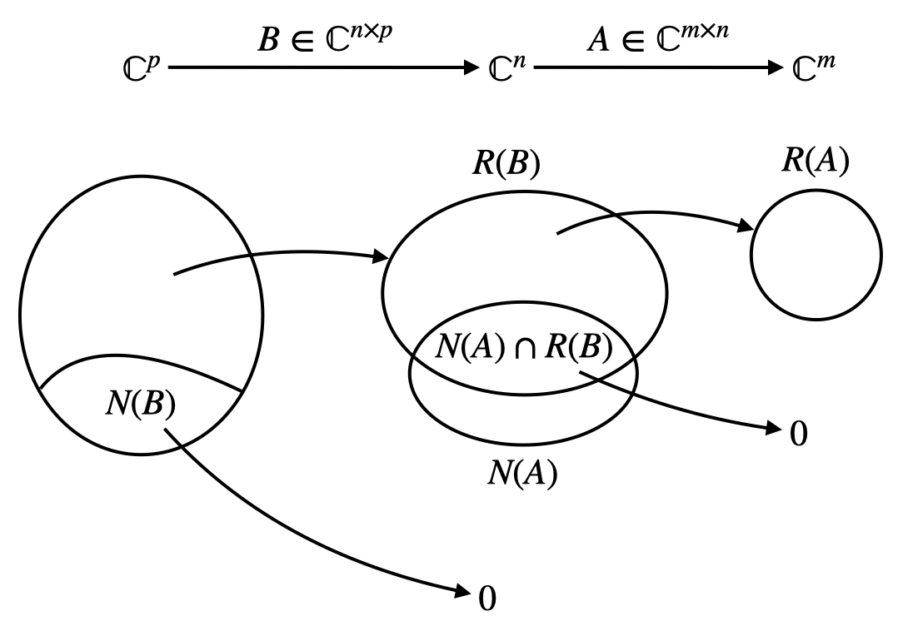
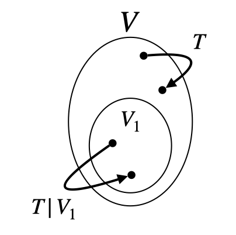
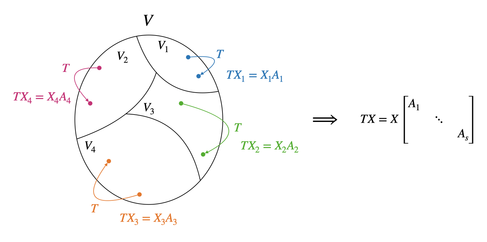

[矩阵论]1.2线性变换及其矩阵表示
线性映射
只需验证 2 条性质：
- \(T(x+y)=T(x)+T(y)\)
- \(T(kx)=kT(x)\)
线性映射的矩阵表示
设有 \(m\) 维线性空间 \(W\) 和 \(n\) 维线性空间 \(V\)，\(X=(x_1,\ldots,x_m),\,Y=(y_1,\ldots,y_n)\) 分别是 \(W,V\) 的基。\(X\) 被 \(T\) 映射到 \(V\) 中后可以由 \(Y\) 线性表示，即：
\[ \begin{cases} Tx_1=a_{11}y_1+\cdots+a_{n1}y_n\\ \quad\vdots\\ Tx_m=a_{1m}y_1+\cdots+a_{nm}y_n\\ \end{cases}\implies TX=Y \underbrace{\begin{bmatrix} a_{11}&\cdots&a_{1m}\\ \vdots&\ddots&\vdots\\ a_{n1}&\cdots&a_{nm}\\ \end{bmatrix}}_A \] 称 \(A\in\mathbb R^{n\times m}\) 为 \(T\) 在基 \(X,Y\) 下的矩阵表示。
可以看见，线性映射的矩阵表示依赖于基的选取，即 \(A=\sigma(T;X,Y)\).
式 \(TX=YA\) 非常重要，日后将经常使用。
设向量 \(x\in W\) 在 \(X\) 下的坐标表示为 \(\xi\)，\(Tx\in V\) 在 \(Y\) 下的坐标表示为 \(\eta\)，那么： \[ Tx=T(X\xi)=(TX)\xi=(YA)\xi=Y(A\xi)=Y\eta\implies \eta=A\xi \]
不同基下矩阵表示的关系
既然线性映射的矩阵表示依赖于基的选取，那么同一个线性映射在不同基下的矩阵表示有什么关系呢？
设 \(W,V\) 空间中的另一组基为 \(X',Y'\)，且 \(X'=XC,\,Y'=YD\)，那么： \[ TX'=T(XC)=(TX)C=(YA)C=Y'D^{-1}AC=Y'A'\implies A'=D^{-1}AC \] 注意 \(D\in\mathbb R^{n\times n},\,A\in\mathbb R^{n\times m},\,C\in\mathbb R^{m\times m}\).
复合线性映射的矩阵表示
设 \(S:W\to V,\,T: V\to U\)，定义它们的复合为 \((T\circ S)(x)=T(S(x))\).
设 \(W,V,U\) 下各有基 \(X,Y,Z\)，在这些基下 \(S,T\) 的矩阵表示分别为：\(A=\sigma(S;X,Y)\)，\(B=\sigma(T;Y,Z)\)，则： \[ (T\circ S)(X)=T(S(X))=T(YA)=(TY)A=(ZB)A=Z(BA) \] 即复合映射的矩阵表示为 \(BA\).
可以看见 \(BA\) 只与 \(X,Z\) 有关，与 \(Y\) 无关，即 \(BA=\sigma(T\circ S;X,Z)\). 可以选取 \(V\) 的另一组基证明这一点：设 \(Y'\) 也是 \(V\) 的基且 \(Y=Y'C\)，那么： \[ \begin{align} &SX=YA=(Y'C)A=Y'(CA)=Y'A'\implies CA=A'\\ &TY=T(Y'C)=(TY')C=(ZB')C=Z(B'C)=ZB\implies B'C=B \end{align} \] 因此 \(BA=(B'C)A=B'(CA)=B'A'\).
线性映射的维数公式
与矩阵类似，也可以定义线性映射 \(T:W\to V\) 的值域和核：
- 值域：\(R(T)=\{y\in V\vert y=Tx,\forall x\in W\}\)
- 核：\(N(T)=\{x\vert Tx=0,x\in W\}\)
- 秩：\(\dim(R(T))\)
- 亏度：\(\dim(N(T))\)
且有维数公式： \[ \dim(R(T))+\dim(N(T))=\dim(W) \] 可以用基扩充的方式来证明，与矩阵的维数公式类似，此处略去。
线性映射构成的空间
线性映射本身在以下加法和数乘定义下也能构成一个线性空间：
- 加法：\((T_1+T_2)(x)=T_1(x)+T_2(x)\)
- 数乘：\((kT_1)(x)=k(T_1(x))\)
线性映射与矩阵的关系
根据上文的讨论，我们知道线性映射在给定基后可以用矩阵表示。因此我们可以借助矩阵来研究线性映射的性质，或借助线性映射来研究矩阵的性质。例如下面的定理。
定理：设 \(A\in\mathbb C^{m\times n}\)，\(B\in\mathbb C^{n\times p}\)，则： \[ \begin{align} &\dim(N(AB))=\dim(N(B))+\dim(N(A)\cap R(B))\\ &\dim(R(AB))=\dim(R(B))-\dim(N(A)\cap R(B)) \end{align} \] 推论： \[ \begin{align} &\text{rank}(A)+\text{rank}(B)-n\leq \text{rank}(AB)\\ &\dim(R(AB))+\dim(R(BC))-\dim(R(B))\leq \dim(R(ABC)) \end{align} \] 将矩阵 \(A,B\) 看作线性映射，那么这两条定理可以直观地按下图理解：

- \(N(AB)\) 包含被 \(B\) 映射到了 \(0\) 的部分和没被 \(B\) 映射到 \(0\)、但被 \(A\) 映射到 \(0\) 的部分。
- \(R(AB)\) 是没有被 \(B\) 映射到 \(0\) 的部分中，也没有被 \(A\) 映射到 \(0\) 的部分。
证明依旧可以采用基扩充的思路。
证明 \(\dim(N(AB))=\dim(N(B))+\dim(N(A)\cap R(B))\).
存在一组线性无关的 \(x_1,\ldots,x_r\in\mathbb C^p\) 使得 \((Bx_1,\ldots,Bx_r)\) 为 \(N(A)\cap R(B)\) 的一个基，再取 \(N(B)\) 的一个基 \((y_1,\ldots,y_s)\)，则只需要证明 \((x_1,\ldots,x_r,y_1,\ldots,y_s)\) 构成 \(N(AB)\) 的一个基即可。
首先证明线性无关。由于 \((x_1,\ldots,x_r)\) 线性无关，\((y_1,\ldots,y_s)\) 线性无关，因此只需要证明 \(y_j\ (j=1,\ldots,s)\) 与 \((x_1,\ldots,x_r)\) 线性无关即可。这是容易的，因为 \(y_j\in N(B),\,x_i\in R(B)\)，而 \(N(B)\cap R(B)=\{0\}\).
其次，任取 \(z\in N(AB)\)，那么 \(ABz=0\). 当 \(Bz=0\) 时，\(z\in N(B)\)，可以被 \((y_1,\ldots,y_s)\) 线性表示；当 \(Bz\neq 0\) 时，\(Bz\in N(A)\cap R(B)\)，因此 \(Bz\) 可以被 \((Bx_1,\ldots,Bx_r)\) 线性表示，即： \[Bz=\sum_{i=1}^r a_i Bx_i\implies B\left(z-\sum_{i=1}^ra_ix_i\right)=0\] 但由于 \(z,x_i\notin N(B)\)，所以只能是括号内为零，即 \(z\) 可以被 \((x_1,\ldots,x_r)\) 线性表示。证毕。
证明 \(\dim(R(AB))=\dim(R(B))-\dim(N(A)\cap R(B))\).
可以类似地采用基扩充的思路证明，这里选择另一种方法。利用上一条定理的结论，结合： \[\dim(R(AB))+\dim(N(AB))=\dim(R(B))+\dim(N(B))=p\] 容易推出结论。
线性变换
线性变换是特殊的线性映射。线性变换从一个线性空间映射到它本身，即 \(T:W\to W\).
线性变换的矩阵表示
由于线性变换只涉及一个空间，所以当我们讨论线性映射的矩阵表示时，只需选择一个基 \(X\)，即： \[ TX=XA \] 当然，我们也可以选择两个不同的基 \(X,Y\)，这时相当于把线性变换依旧视作线性映射。本课程以后提到线性变换时都只选择一个基。
相似矩阵——不同基下的矩阵表示
与线性映射在不同基下有不同的矩阵表示类似，线性变换在不同基下也有着不同的矩阵表示。设线性变换 \(T\) 在基 \(X\) 下的矩阵表示为 \(A\)，在基 \(X'\) 下的矩阵表示为 \(A'\)，且两个基之间的关系为：\(X'=XC\)，那么： \[ TX'=T(XC)=(TX)C=(XA)C=X(AC)=X'C^{-1}AC=X'A'\implies A'=C^{-1}AC \] 我们称 \(A\) 与 \(A'\) 是相似的。
可以看见，相似矩阵本质上是同一个线性变换在不同基下的表示。因此，相似等价意义下具有的性质可以视作线性变换的性质。例如，相似矩阵的行列式相同，本质是因为行列式对应着线性变换对原空间的单位超立方体变换后的体积。又如，相似矩阵有着相同的特征多项式，所以我们可以定义线性变换的特征多项式。
线性变换的多项式
定义 \(T^2\) 表示复合变换 \(T\circ T\)，定义 \(T^k=T^{k-1}\circ T\).
容易知道，若 \(T\) 的矩阵表示为 \(A\)，那么 \(T^k\) 的矩阵表示为 \(A^k\).
进一步地，多项式 \(f(T)\) 的矩阵表示就是 \(f(A)\).
特征值与特征向量
特征值、特征向量、特征子空间
线性变换的特征值和特征向量与矩阵的特征值和特征向量有着类似的定义： \[ Tx=\lambda x,\quad x\neq 0 \] 设 \(\lambda_0\) 为 \(T\) 的一个特征值，则称 \(\lambda_0I-T\) 的核空间（\(I\) 表示恒等变换）为 \(T\) 属于 \(\lambda_0\) 的特征子空间： \[ V_{\lambda_0}=N((\lambda_0I-T))=\{x\mid(\lambda_0 I-T)x=0\} \]
线性变换与矩阵的特征值和特征向量的关系
设 \(X\) 为一个基，\(T\) 在该基下的矩阵表示为 \(A\)，\(\lambda\) 为 \(T\) 的一个特征值，对应特征向量 \(x\) 在该基下的坐标表示为 \(\xi\)，即： \[ x=X\xi\quad TX=XA\quad Tx=\lambda x \] 那么： \[ \begin{align} Tx&=T(X\xi)=(TX)\xi=XA\xi\\ Tx&=\lambda x=\lambda X\xi=X(\lambda\xi) \end{align}\implies A\xi=\lambda\xi \] 即 \(\lambda\) 也是 \(A\) 的特征值，\(\xi\) 是对应的特征向量。
换句话说，线性变换的特征值和其矩阵表示的特征值是一样的，而特征向量的关系就是在选取的那个基下的坐标关系。
\(AB\) 和 \(BA\) 有相同的非零特征值
可以叙述为以下定理：设 \(A\in\mathbb R^{m\times n},B\in\mathbb R^{n\times m}\)，\(AB\) 的特征多项式为 \(\varphi_{AB}(\lambda)\)，\(BA\) 的特征多项式为 \(\varphi_{BA}(\lambda)\)，则： \[ \lambda^n\varphi_{AB}(\lambda)=\lambda^m\varphi_{BA}(\lambda) \]
证明：由于 \[\begin{bmatrix}I_m&0\\-B&I_n\end{bmatrix}\begin{bmatrix}I_m&A\\0&\lambda I_n\end{bmatrix}\begin{bmatrix}\lambda I_m-AB&0\\B&I_n\end{bmatrix}=\begin{bmatrix}I_m&A\\0&\lambda I_n-BA\end{bmatrix}\] 等式两边取行列式即得证。
批注：上面的证明非常 tricky. 更直接的证明方式是：设 \(\lambda,x\) 为 \(AB\) 的特征值和特征向量，即 \(ABx=\lambda x\)，那么左乘 \(B\) 得到： \[(BA)(Bx)=\lambda (Bx)\] 也就是说 \(\lambda\) 和 \(Bx\) 是 \(BA\) 的特征值和特征向量。
属于不同特征值的特征向量线性无关
设 \(\lambda_1,\ldots,\lambda_s\) 为 \(A\) 的互不相同的特征值，\(x_1,\ldots,x_s\) 是分别属于这些特征值的特征向量，那么 \(x_1,\ldots,x_s\) 线性无关。
证明：数学归纳法。设： \[\sum_{i=1}^s k_ix_i=0\] 用 \(A\) 左乘上式得： \[\sum_{i=1}^sk_iAx_i=\sum_{i=1}^sk_i\lambda_ix_i=0\] 根据上面两个式子消去 \(x_s\)，得： \[\sum_{i=1}^{s-1}k_i(\lambda_i-\lambda_s)x_i=0\] 根据归纳假设，有 \(k_i(\lambda_i-\lambda_s)=0\)；又特征值互不相同，故 \(k_i=0\ (i=1,\ldots,s-1)\). 进而 \(k_s=0\). 证毕。
任意 \(n\) 阶矩阵都与一个上三角矩阵相似
可以用数学归纳法证明。
证：设 \(A\) 是一个 \(n\) 阶矩阵，\(x_1\) 为 \(A\) 的特征值 \(\lambda\) 对应的特征向量。将 \(x_1\) 扩充为 \(\mathbb C^n\) 的一个基 \((x_1,\ldots,x_n)\)，那么 \(Ax_i\) 都可以被这个基线性表示： \[\begin{cases}Ax_1=b_{11}x_1+b_{21}x_2+\cdots+b_{n1}x_n=\lambda x_1\\Ax_2=b_{12}x_1+b_{22}x_2+\cdots+b_{n2}x_n\\\quad\vdots\\Ax_n=b_{1n}x_1+b_{2n}x_2+\cdots+b_{nn}x_n\end{cases}\] 写作矩阵形式： \[AX=XB=X\begin{bmatrix}\lambda&b_{12}&\cdots&b_{1n}\\0&b_{22}&\cdots&b_{2n}\\\vdots&\vdots&\ddots&\vdots\\0&b_{n2}&\cdots&b_{nn}\end{bmatrix}=X\begin{bmatrix}\lambda&\alpha^T\\0&B_1\end{bmatrix}\] 根据归纳假设，设 \(B_1=QUQ^{-1}\) 且 \(U\) 是上三角矩阵，那么： \[AX=X\begin{bmatrix}\lambda&\alpha^T\\0&QUQ^{-1}\end{bmatrix}=X\begin{bmatrix}1&0\\0&Q\end{bmatrix}\begin{bmatrix}\lambda&\alpha^T\\0&U\end{bmatrix}\begin{bmatrix}1&0\\0&Q^{-1}\end{bmatrix}\] 所以 \(A\) 相似于上三角矩阵 \(\begin{bmatrix}\lambda&\alpha^T\\0&U\end{bmatrix}\). 证毕。
零化多项式与最小多项式
零化多项式
设 \(A\) 是一个 \(n\) 阶矩阵，若多项式 \(f(x)\) 使得 \(f(A)=0\)，则称 \(f(x)\) 为矩阵 \(A\) 的一个零化多项式。
Hamilton-Cayley 定理
设 \(A\) 是一个 \(n\) 阶矩阵，则 \(A\) 的特征多项式是其零化多项式。即设： \[ \varphi(\lambda)=\text{det}(\lambda I-A)=\lambda^n+a_1\lambda^{n-1}+\cdots+a_{n-1}\lambda+a_n \] 则： \[ \varphi(A)=A^n+a_1A^{n-1}+\cdots+a_{n-1}A+a_nE_n=0 \] 可以用数学归纳法证明。
证：根据 Schur 定理的证明过程，设 \(A\) 的 \(n\) 个特征值为 \(\lambda_1,\ldots,\lambda_n\)，那么 \(A\) 相似于 \(R=\begin{bmatrix}\lambda_1&\alpha^T\\0&U\end{bmatrix}\)，\(A=P^{-1}RP\).
由于相似矩阵有相同的特征值，所以 \(\lambda_1,\ldots,\lambda_n\) 也是 \(R\) 的特征值。容易知道 \(\lambda_2,\ldots,\lambda_n\) 是 \(U\) 的特征值。
又因为： \[\varphi(A)=\varphi(P^{-1}RP)=\sum_{i=0}^n a_{n-i}A^i=\sum_{i=0}^n a_{n-i}(P^{-1}RP)^i=\sum_{i=0}^n a_{n-i}P^{-1}R^iP=P^{-1}\varphi(R)P\] 所以要证明 \(\varphi(A)=0\)，只需要证明 \(\varphi(R)=0\). \[\begin{align}\varphi(R)&=(R-\lambda_1E_n)\cdots(R-\lambda_n E_n)\\&=\begin{bmatrix}\lambda_1-\lambda_1&\alpha^T\\0&U-\lambda_1E_{n-1}\end{bmatrix}\cdots\begin{bmatrix}\lambda_n-\lambda_1&\alpha^T\\0&U-\lambda_nE_{n-1}\end{bmatrix}\\&=\begin{bmatrix}0&\alpha^T\\0&U-\lambda_1E_{n-1}\end{bmatrix}\begin{bmatrix}\prod_{j=2}^n(\lambda_j-\lambda_1)&\beta^T\\0&\prod_{j=2}^n(U-\lambda_jE_{n-1})\end{bmatrix}\\&=\begin{bmatrix}0&0\\0&(U-\lambda_1 E_{n-1})\prod_{j=2}^n(U-\lambda_jE_{n-1})\end{bmatrix}\end{align}\] 根据归纳假设，\(\prod_{j=2}^n(U-\lambda_jE_{n-1})=0\)，因此上式为 \(0\)，证毕。
Hamilton-Cayley 定理说明：对于 \(n\) 阶矩阵 \(A\)，\(\{A^n,A^{n-1},\ldots,A,E_n\}\) 必然线性相关。
最小多项式
零化多项式中，次数最低的首项系数为 \(1\) 的零化多项式 \(m(\lambda)\) 称为最小多项式。（注意这里 \(\lambda\) 只是一个变量符号，不是特征值的意思）
定理：最小多项式可以整除任意其他首项系数为 \(1\) 的零化多项式 \(\psi(\lambda)\)，且是唯一的。
证：作多项式除法：\(\psi(\lambda)=m(\lambda)p(\lambda)+r(\lambda)\)，其中 \(r(\lambda)\) 次数小于 \(m(\lambda)\) 的次数。由于 \(\psi(A)=m(A)=0\)，故 \(r(A)=0\)，但由于 \(m(\lambda)\) 是次数最小的零化多项式，所以只能是 \(r(\lambda)=0\). 因此 \(m(\lambda)\mid\psi(\lambda)\).
定理：矩阵 \(A\) 的最小多项式 \(m(\lambda)\) 和特征多项式 \(\varphi(\lambda)\) 零点相同（重数可以不同）。换句话说，\(m(\lambda)\) 的零点就是特征值，只是与 \(\varphi(\lambda)\) 的次数不同。
证明：根据上一条定理，\(\varphi(\lambda)=m(\lambda)p(\lambda)\)，所以 \(m(\lambda)=0\implies \varphi(\lambda)=0\). 所以现在只需证明 \(\varphi(\lambda)=0\implies m(\lambda)=0\).
设 \(\varphi(\lambda_0)=0\)，\(A\mathbf x_0=\lambda_0\mathbf x_0\)，则 \(m(A)\mathbf x_0=m(\lambda_0)\mathbf x_0=0\)，由于 \(\mathbf x_0\neq \mathbf 0\)，所以 \(m(\lambda_0)=0\). 证毕。
显然，如果矩阵 \(A\) 的最小多项式次数为 \(m\)，那么 \(\{A^{m-1},\ldots,A,E_n\}\) 线性无关，但再加入一个 \(A^m\) 就线性相关了。
不变子空间、对角化与 Jordan 标准形
不变子空间
若线性空间 \(V\) 的线性子空间 \(V_1\) 对线性变换 \(T\) 保持不变，即：\(\forall \mathbf x\in V_1\)，有 \(T\mathbf x\in V_1\)，则称 \(V_1\) 是 \(T\) 的不变子空间。这时 \(T\) 可以看作 \(V_1\) 上的线性变换，称为 \(T\) 在 \(V_1\) 上的限制 \(T\vert V_1\). 但值得注意的是，\(T\) 和 \(T\vert V_1\) 是不同的线性变换（它们的输入维度都不同）。

性质 1：不变子空间的和与交也是不变子空间。【易证】
性质 2：线性变换 \(T\) 的值域 \(R(T)\) 和核 \(N(T)\) 都是 \(T\) 的不变子空间。【易证】
性质 3：设 \(f(t)\) 为一多项式，则 \(T\) 的不变子空间也是 \(f(T)\) 的不变子空间。
证明：设 \(V_1\) 是 \(T\) 的不变子空间，即 \(\forall x\in V_1\)，有 \(Tx\in V_1\). 那么 \(T^2x=T(Tx)\in V_1\)，因此 \(f(T)(x)\in V_1\)，即 \(V_1\) 也是 \(f(T)\) 的不变子空间。证毕。
特征子空间为不变子空间：根据性质 2 和性质 3 可知，\(N(f(T))\) 为 \(T\) 的不变子空间，进而特征子空间 \(V_\lambda=N(\lambda I-T)\) 为 \(T\) 的不变子空间。
分块对角化与对角化
设 \(T\) 是线性空间 \(V^n\) 上的线性变换，若 \(V^n\) 可以分解为 \(s\) 个 \(T\) 的不变子空间的直和： \[ V^n=V_1\oplus\cdots\oplus V_s \] 在每个不变子空间 \(V_i\) 中选取一个基 \(X_i=(x_{i1},\ldots,x_{in_i}),\,(i=1,\ldots,s)\)，它们合并构成 \(V^n\) 的基 \(X=(X_1,\ldots,X_s)\)，则 \(T\) 在这个基下的矩阵表示为分块对角矩阵： \[ A=\begin{bmatrix}A_1&&\\&\ddots&\\&&A_s\end{bmatrix} \] 反过来也成立：若 \(T\) 在基 \(X=(X_1,\ldots,X_s)\) 下的矩阵表示为分块对角矩阵，那么 \(X_i\) 张成的子空间 \(V_i\) 是 \(T\) 的不变子空间，且 \(V^n\) 是它们的直和。

进一步地，如果我们想让 \(A\) 是对角阵，那么各个 \(A_i\) 都需要是对角阵，也就意味着 \(X_i\) 是 \(T\) 的特征向量。因此，线性变换可对角化的充要条件为存在一组特征向量构成的基。换句话说，有 \(n\) 个线性无关的特征向量。再换句话说，各个特征值的代数重数和几何重数要相等。
一点补充：这里讨论的是线性变换在一组基下的矩阵表示是否是对角阵，但由于线性变换在不同基下的矩阵表示是相似的关系，所以其实和讨论一个矩阵是否可以相似对角化是一回事。
Jordan 标准形
我们已经看到，任意 \(n\) 阶矩阵都能相似于一个上三角矩阵，但是上三角矩阵太多太复杂了，不便于研究；对角矩阵足够简单，但不是所有矩阵都能相似于一个对角矩阵（需要有 \(n\) 个线性无关的特征向量）。所以，是否存在一个介于上三角与对角矩阵之间的矩阵形式，所有矩阵都能与之相似呢？这就是 Jordan 标准形。有关内容我们单独开一篇文章介绍。